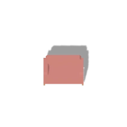
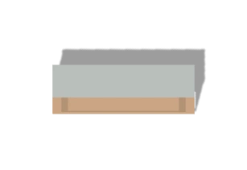
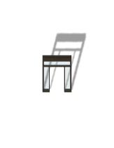
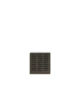

야행 · v123클럽 입구 · 홀 · 직원 통로
지붕과 실내의 겹침을 줄이고, 실제 문·창문·벽 좌표에 맞춰 공간을 다시 표현했습니다. CC0 모델로 가구와 배수구를 교체했습니다. 전체 맵 교체에 앞선 기준 구역입니다.
적용 전 · v122 적용 후 · v123
적용 후 · v123
동일 좌표·동일 시드의 비교 장면입니다. 장면 비교를 위해 주인공의 시작 위치를 설정했으며, 이 화면은 처음부터 끝까지의 플레이 검증을 대신하지 않습니다. 이미지를 누르면 원본 크기로 볼 수 있습니다.
선택한 CC0 모델
같은 투영으로 출력한 가구·문틀·배수구입니다. 라이선스와 원본 해시는 기획·검증 문서에 기록했습니다.



